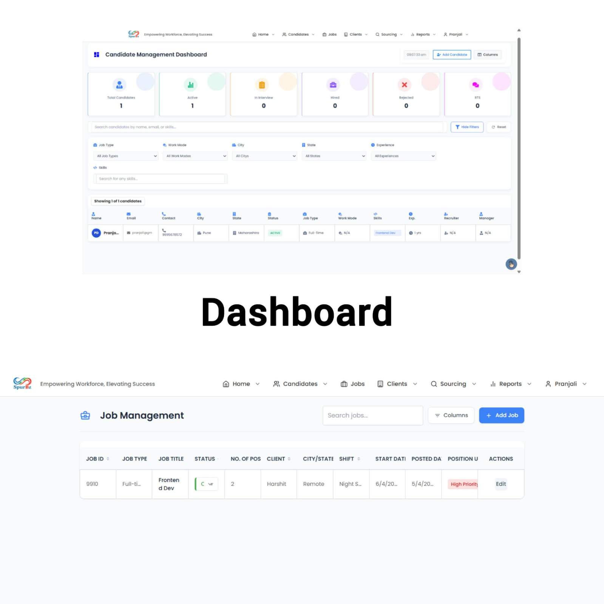
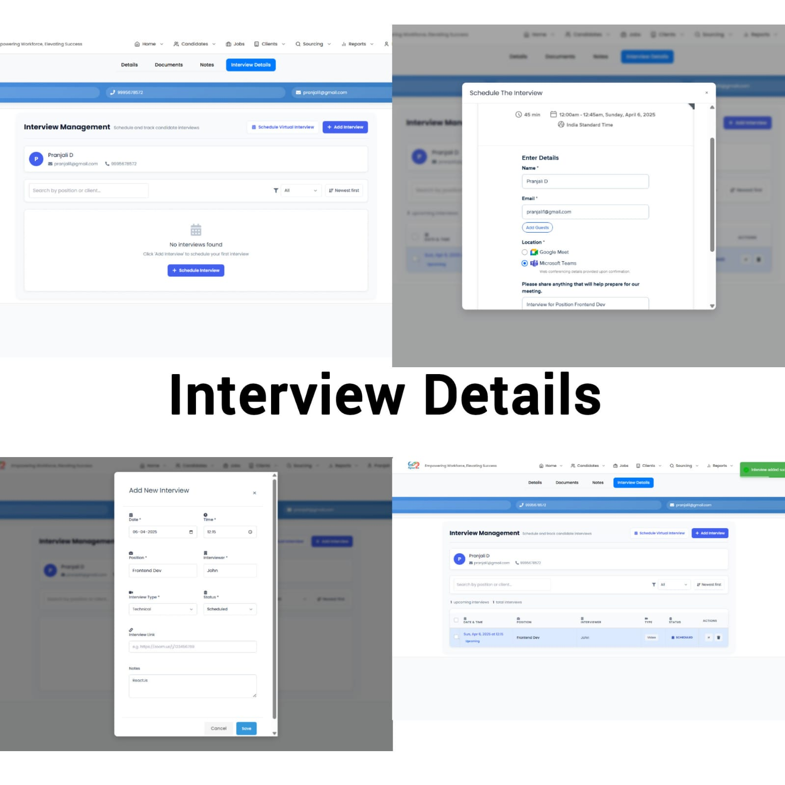
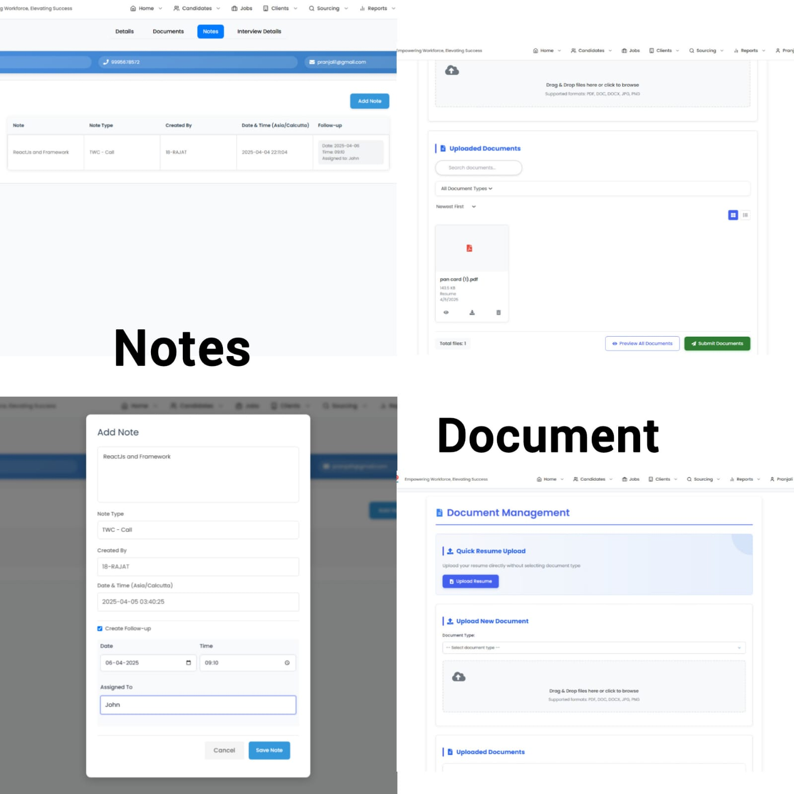
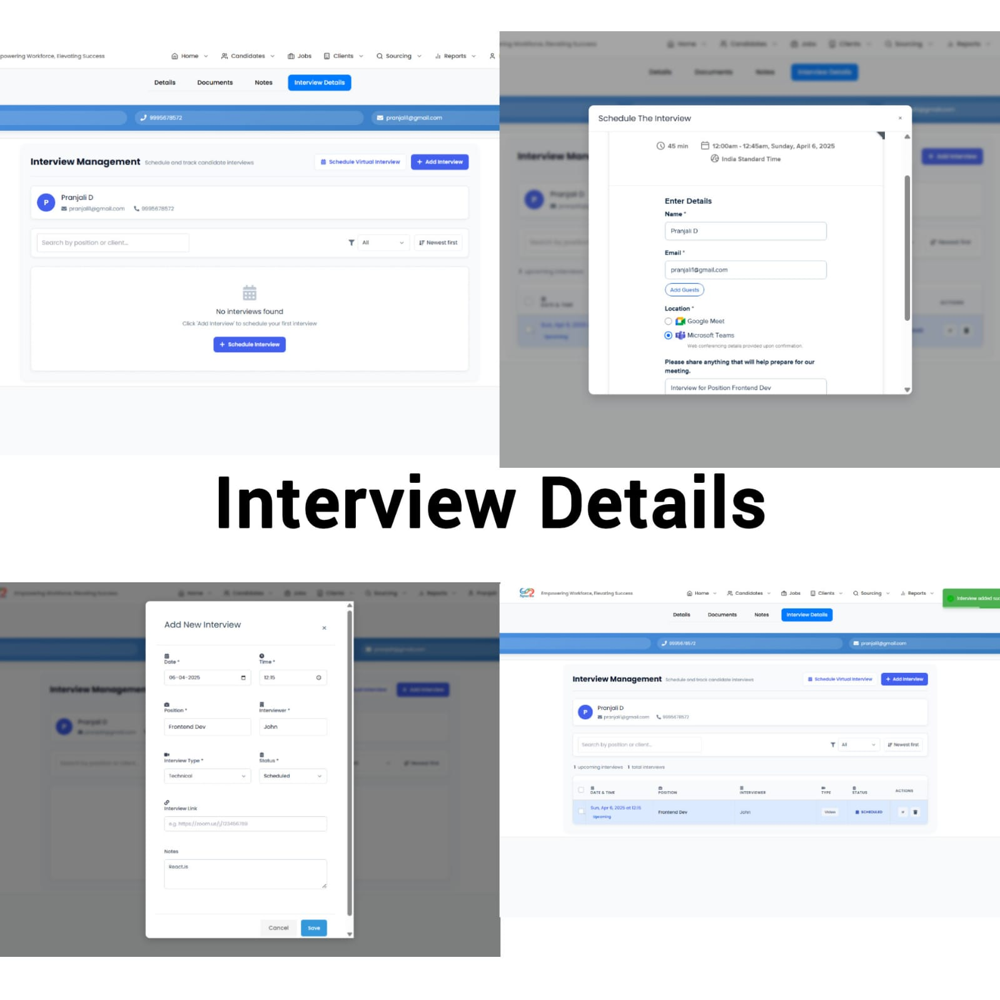
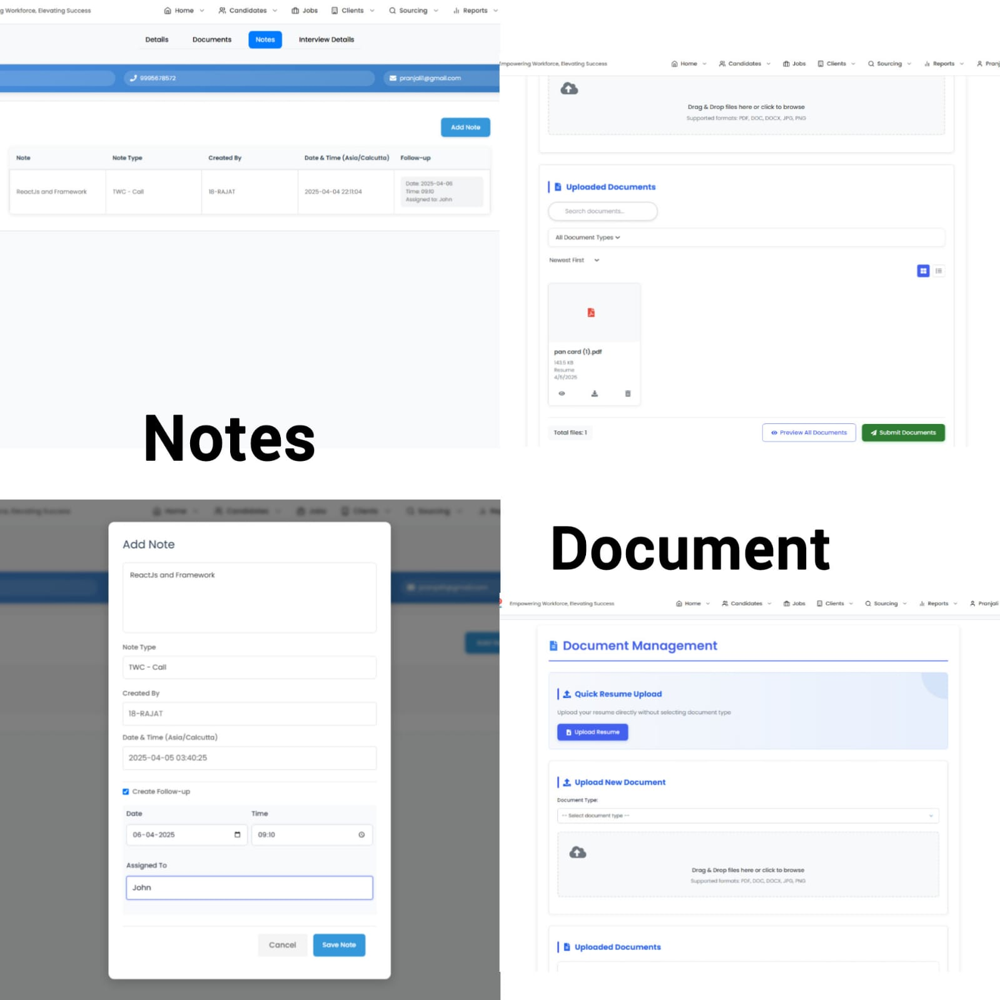
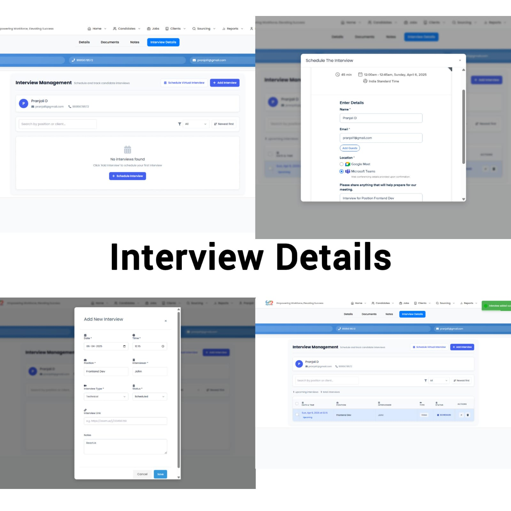
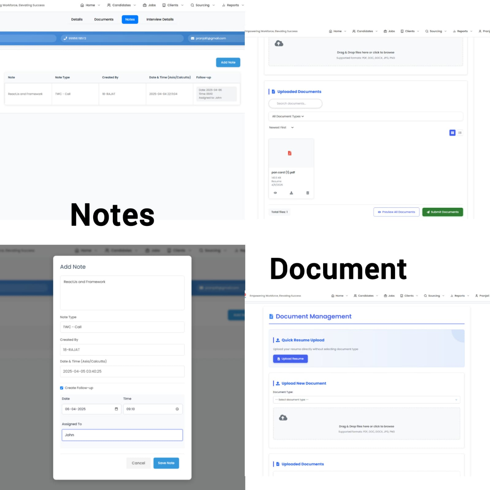
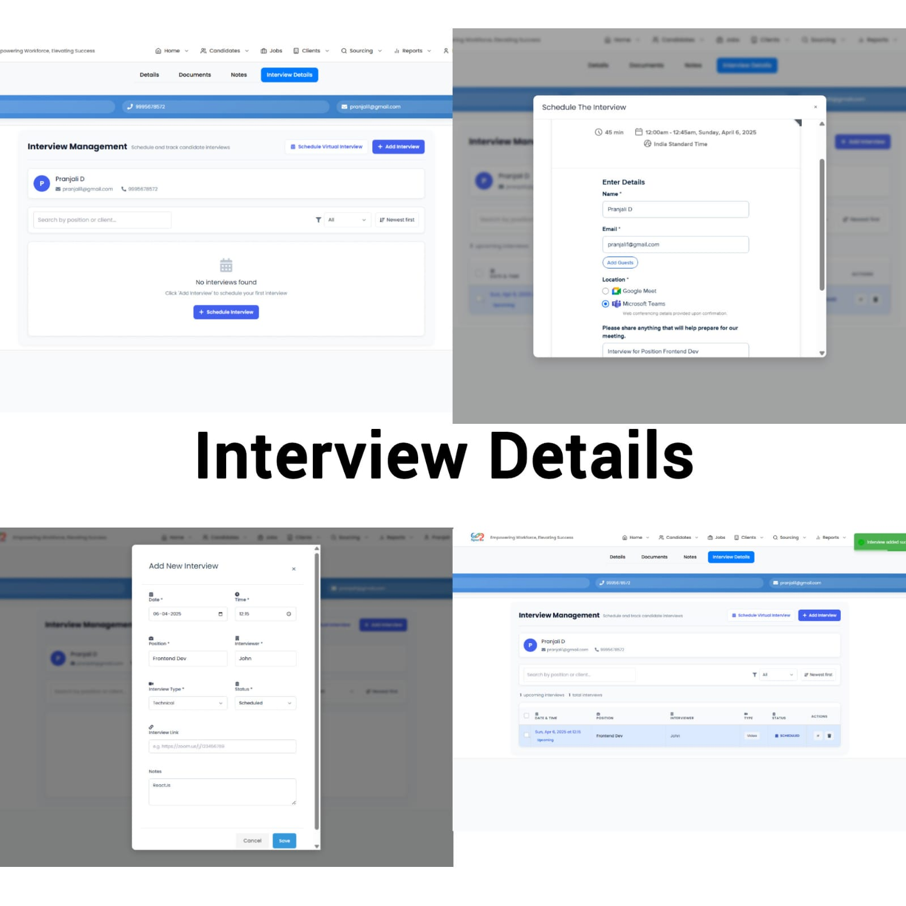
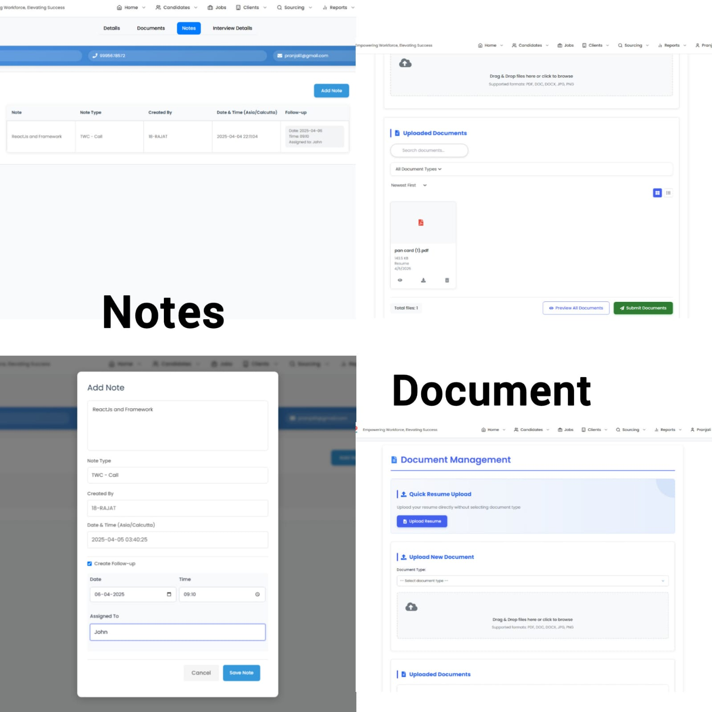

 





Interface Design for a Structured Recruitment Workflow
The ATS (Application Tracking System) is a structured recruitment platform designed to streamline candidate management, job postings, and client workflows.
This project focused on designing a clean and intuitive interface system that simplifies complex recruitment processes.
Recruitment platforms often suffer from cluttered dashboards, inconsistent navigation, and overwhelming data presentation.
The challenge was to design a layout that organizes information clearly while maintaining usability and visual consistency.


The interface follows a clean grid structure with consistent spacing and neutral color tones to reduce cognitive overload.
Information is grouped logically to support fast scanning and decision-making within a recruitment workflow environment.